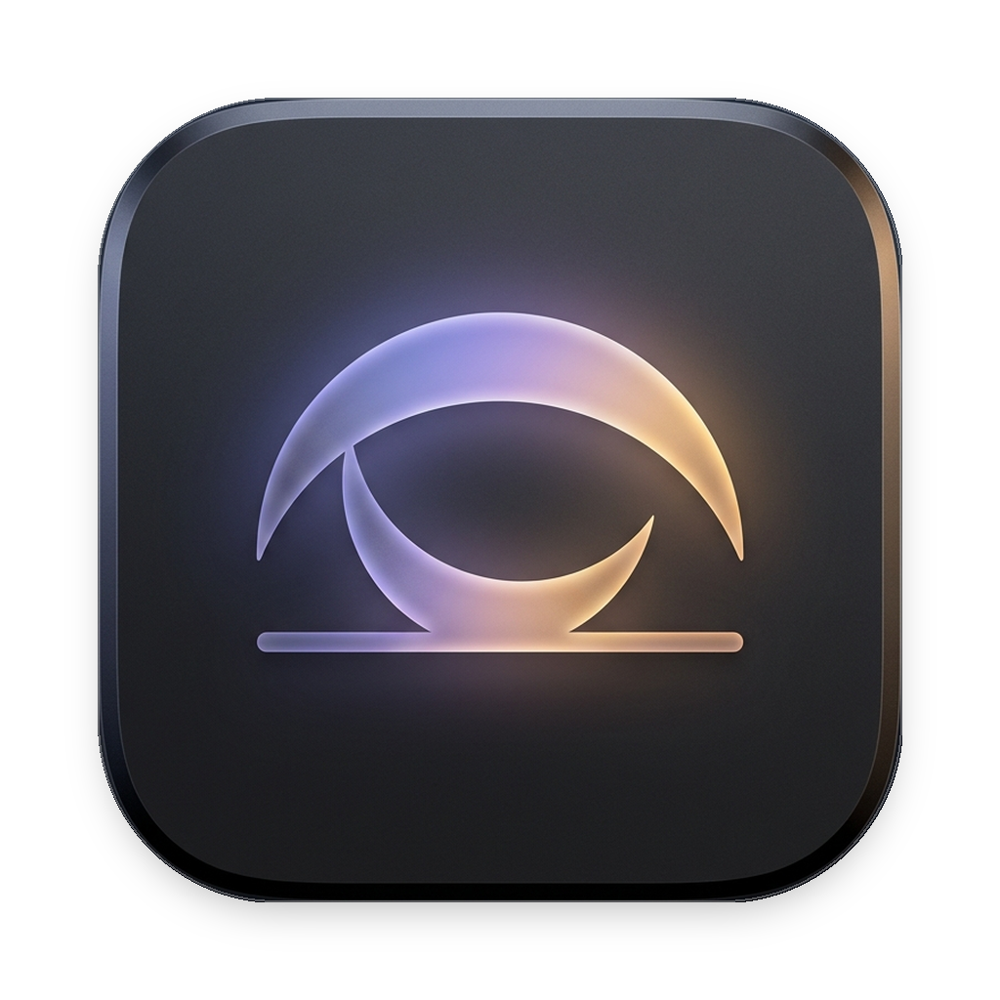
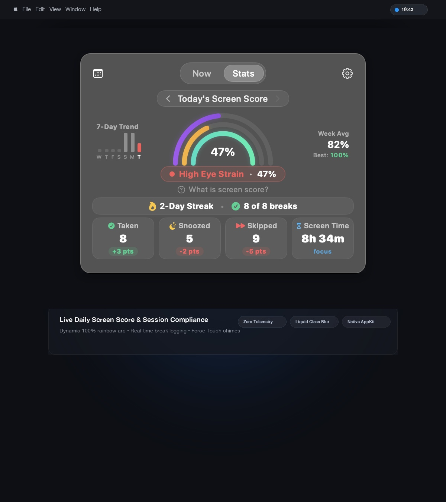
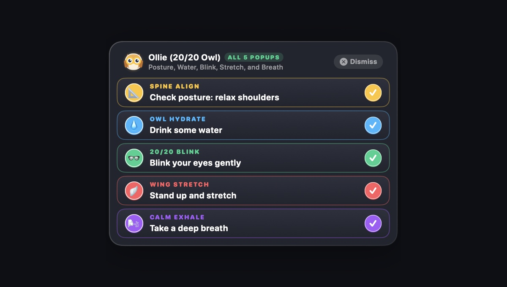
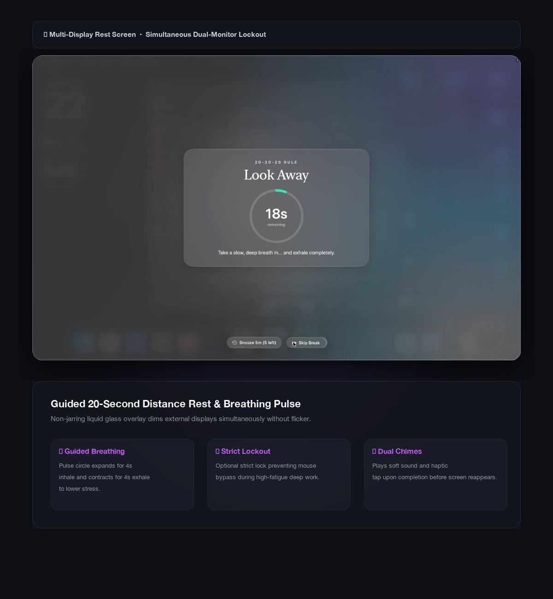
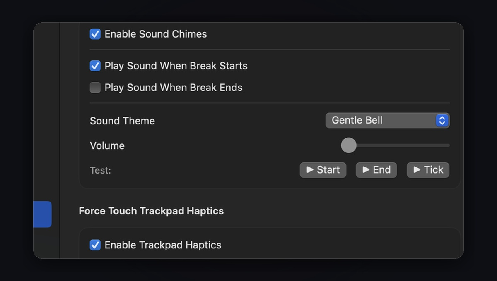
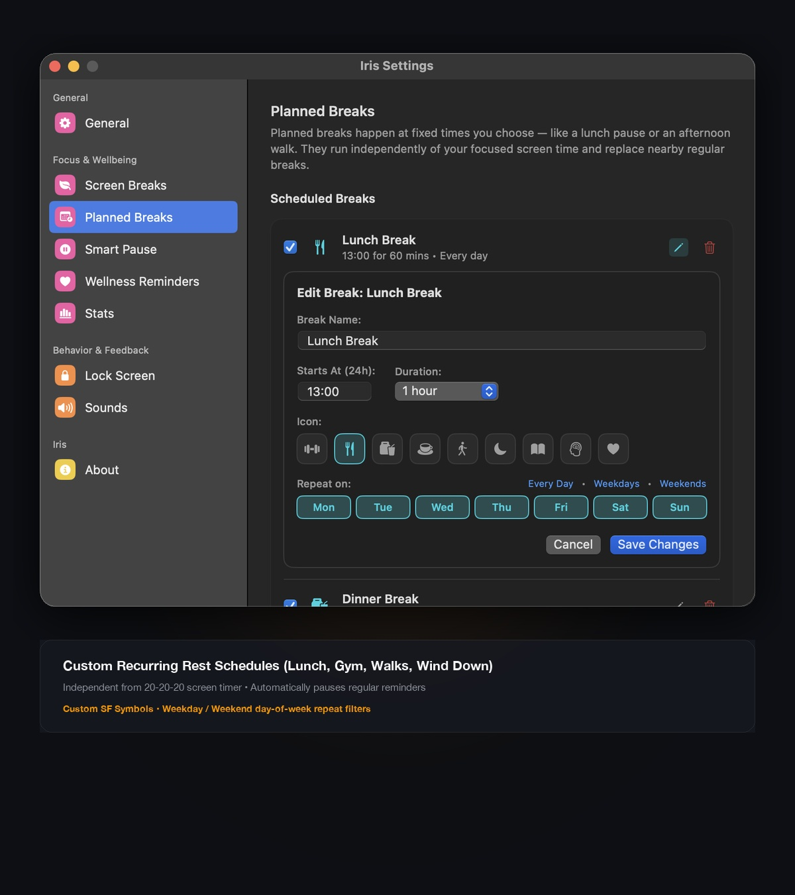
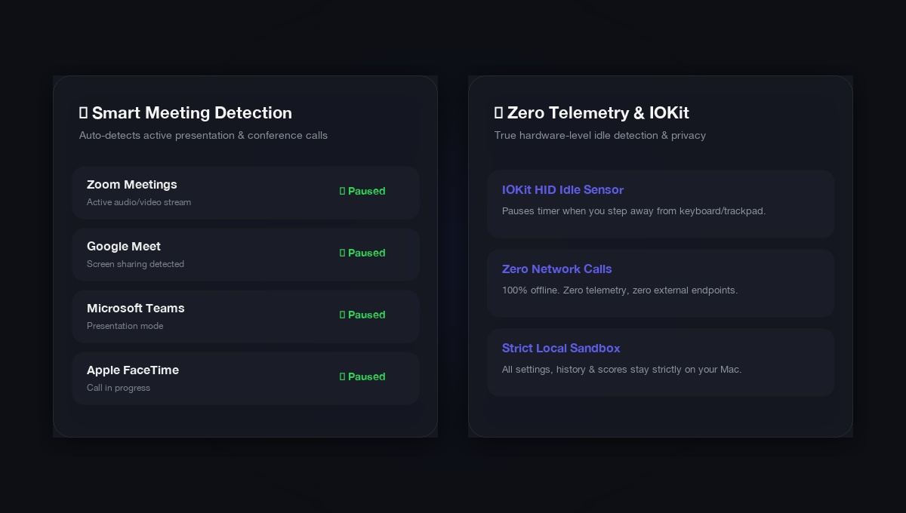

IrisDrop-in eye-care companion engineered around the 20-20-20 rule. Rest reminders, Force Touch trackpad haptics, smart meeting auto-pause, and zero background bloat.
brew install --cask harshwardhangalande/iris/iris

Live resident countdown in your macOS menu bar, fluid sliding carousel between Now and Stats tabs, animated Screen Score rainbow arc gauge with real-time count-up, 4 interchangeable flanking styles (7-Day Sparkline, Companion Buddy, Arc Breakdown, Legend), daily streak flame, and compliance metrics with uniform padding and zero window overlap.

Tactile 3D HUD micro-prompts presenting all 5 wellness actions together: eye blinking, mindful hydration, posture alignment, stretching, and deep breathing. Tailored to 5 nature companions (Ollie, Pip, Koa, Barnaby, Finley) with custom emoji badges, 3D checkmarks, and customizable screen positioning (2%–90%).

Non-jarring full-screen coverage across all connected external monitors simultaneously, featuring distance eye relaxation prompts and guided breathing.

Physical sensations delivered directly to your MacBook Force Touch trackpad. Feel break start snaps, a gentle heartbeat pulse upon rest completion, and stepping notch countdown ticks.

Set custom recurring pauses for Lunch, Gym, Afternoon Walks, or Evening Wind Down with precision 24h start times, custom SF Symbols, and day-of-week repeat pills.

Intelligently pauses breaks during Zoom, Google Meet, Teams, or FaceTime calls and screen sharing. Fully private with zero network tracking or external telemetry.
Crafted natively for macOS without Electron or background bloat.
Every 20 minutes, 20 seconds of looking 20 feet away to relax eye ciliary muscles and eliminate screen fatigue.
Physical tactile feedback on your Mac trackpad: break completion heartbeat pulse, start snap, and 3-2-1 countdown notches.
Set custom daily rest periods for Lunch, Gym, or Evening Wind Down with SF Symbols and customizable durations.
Automatically detects Zoom, Google Meet, Teams, and FaceTime calls or screen sharing, pausing reminders gracefully.
Detects when you step away from your Mac, pausing the timer and resetting seamlessly upon your return.
Zero telemetry, zero external network calls, zero accounts. All settings and scores stay strictly on your Mac.
Choose between Ollie Owl, Pip Frog, Koa Koala, Barnaby Bunny, and Finley Otter with daily streaks, 3D tactile buttons, and confetti celebrations.
Automatically mutes chimes when video is playing full-screen, and provides smooth ambient edge glow warnings before breaks.
Common questions about Iris and eye strain prevention.
The 20-20-20 rule is an optometric guideline: every 20 minutes of screen work, look at an object at least 20 feet (6 meters) away for at least 20 seconds. It relaxes eye muscles and relieves digital eye strain (Computer Vision Syndrome).
Iris is 100% free and open-source under the MIT license. It offers native Liquid Glass menu bar aesthetics, Force Touch trackpad haptics, smart meeting auto-pause, planned breaks, and zero tracking.
Yes. Iris automatically detects multi-monitor setups and displays full-screen ambient break overlays across all connected displays simultaneously.
Download the .dmg installer from the top of this page, open the disk image, and drag Iris into your Applications folder, or install via Homebrew with brew install --cask harshwardhangalande/iris/iris.
Yes. Iris includes a one-click style toggle in Settings. You can choose the clean, subtle Apple Liquid Glass aesthetic or enjoy the playful mode with 3D tactile buttons, daily streaks, confetti celebrations, and nature mascots.
Iris includes Ollie the Owl, Pip the Tree Frog, Koa the Zen Koala, Barnaby the Bunny, and Finley the Sea Otter. Each companion features animated breathing, blinks, and encouraging poses that celebrate your healthy habits without guilt or punishment.